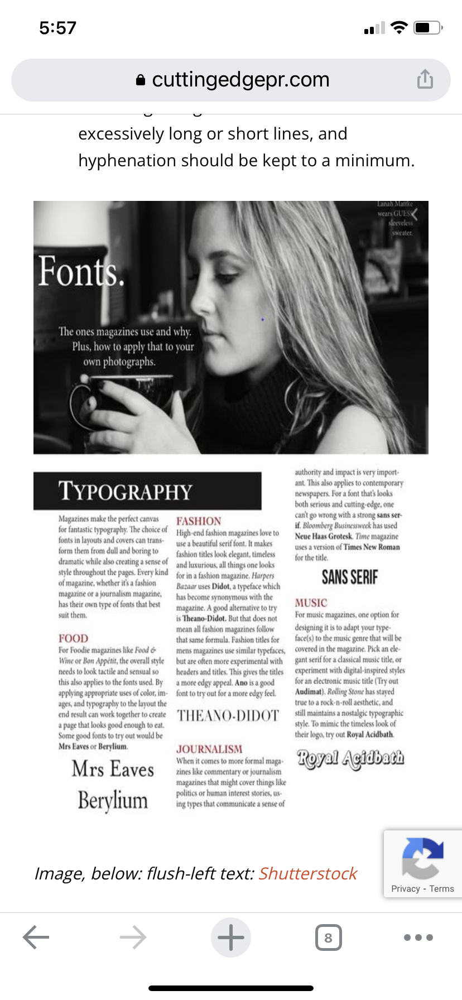
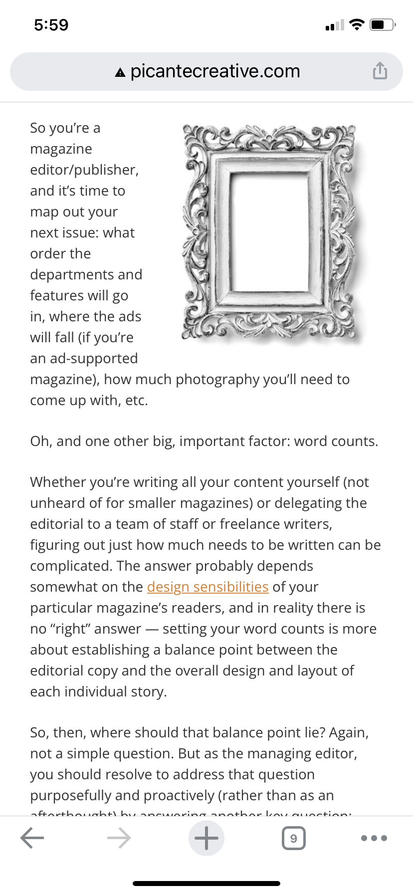

Alignment
Micropat
Alignment is the placement of elements so they line up in composition, in design we use alignment to orgaize elements, to group elements, to create balance to create structure, to create connection between elements, to create sharp and clear outcome. Alignment is commonly achieved with the use of grid. A grid can create an invisble structure on which visual elements can be placed. These grid can ensure accurate alignment and consistency in large piece of design work.
Proximity
Mopat
Leveraging proximity to create meaningful groups is reflected even when presenting basic text content: sentences are grouped together in paragraphs separated above and below by whitespace. Further, whitespace around well-designed headings signals which paragraphs they are associated with the text from the corresponding section is usually placed closer to the heading than the text from the preceding section. Placing related elements in close proximity and using whitespace to create meaningful groups is a foundational principle in visual design. Users are task-focused and may scan pages quite quickly, so making these groupings visually obvious increases usability by helping users quickly find and focus only on those UI elements that are most related to their current task.
Space and clean design
Mobat
Using white space evenly makes the content in design easily scannable and significantly improves legibility. A study conducted indicates that proper use of white space between lines of paragraphs and its left and right margins can increase comprehension up to 20%. Such small spaces between lines, paragraph.Large spaces between layouts and layout elements, also called as Macro White Spaces help greatly in guiding the users through the page and prioritising the focus area for the user.